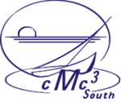

|  | CALIFORNIA MATHEMATICS COUNCIL |
Summary: Although Google will find tens of thousands of hits for any topic we want, most of the sites are of no use. We will explore two NSF-sponsored portals, the Mathematical Sciences Digital Library and Math Gateway, both managed by the Mathematical Association of America (MAA), that concentrate on dependable resources. Each participant must provide his/her own notebook computer with wireless card to be able to access the Internet during the workshop.
Where: The Doubletree Hotel, Anaheim
When: 3:00 - 5:00 pm, Friday, March 2, 2007
Cost: $10 to reserve a place at this limited-enrollment workshop. (First register online, then make check or money order payable to CMC3-South, and mail to Bruce Yoshiwara at the address below.) The $10 will be refunded to attendees of the workshop.
Registration: Click on the link http://www.maa.org/surveys/TakeSurvey.asp?PageNumber=1&SurveyID=6K35n32K4n21G .
Contact: Bruce Yoshiwara (web page)
Los Angeles Pierce College
6201 Winnetka Avenue, PMB 247
Woodland Hills, CA 91371-0001
[Last up-dated
February 13, 2007
]